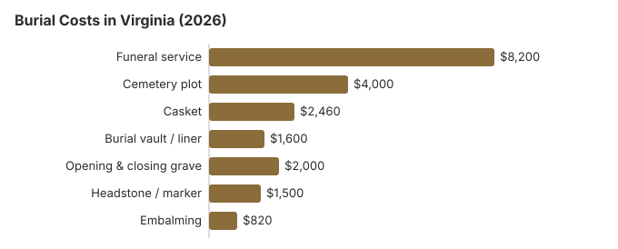

Burial Costs in Virginia (2026)
This guide puts them all in one place for Virginia and flags which line items most often carry room to negotiate.
What Each Part of a Virginia Burial Costs
| Item | Average Cost | Range |
|---|---|---|
| Funeral service | $8,200 | $6,150 – $10,660 |
| Cemetery plot | $4,000 | $2,000 – $8,000 |
| Casket | $2,460 | $820 – $6,560 |
| Burial vault / liner | $1,600 | $800 – $10,000 |
| Opening & closing grave | $2,000 | $500 – $3,000 |
| Headstone / marker | $1,500 | $500 – $5,000+ |
| Embalming | $820 | $500 – $1,500 |
Methodology note: These figures are our estimates, not a survey of local providers, and they are not a quote or professional advice. See how we calculate them or read the full disclaimer.

The total cost of burial in Virginia, including all cemetery fees, typically ranges from $18,760 to $23,260 depending on choices made.
Burial Practices Around Virginia
In much of Virginia, family and church cemeteries still operate alongside commercial ones, and many congregations keep section pricing below market. If you have a church or family plot in Virginia, the difference from a private cemetery may be more than $1,600 (our estimate).
Burial Resources
- Funeral Consumers AllianceNonprofit consumer advocacy for funeral pricing
- Headstone & Monument GuideCosts, types, and buying tips
- Green Burial OptionsEco-friendly and natural alternatives
- Best Online Casket RetailersCaskets bought online often cost less
- Best Burial InsuranceCompare plans to cover burial expenses
Compare Funeral Costs
- Average Funeral Cost in 2026National cost breakdown with real prices
- Cremation vs. Burial Cost ComparisonSide-by-side price comparison to help you decide
- Funeral Cost BreakdownEvery line item explained: know what you're paying for
- Cheapest Funeral OptionsLower-cost alternatives, with typical price ranges
- Direct Cremation: Most Affordable OptionNFDA 2023 median $2,645 with a family-supplied container (latest available)
- How to Compare Funeral PricesStep-by-step guide to getting the best price
Ways to Lower a Burial Bill in Virginia
Burial costs in Virginia can be managed with smart planning:
- Request itemized pricing from every provider: Funeral homes in Virginia must provide a General Price List. Cemeteries are not required to, but most in the Virginia area will share one if you ask specifically for the itemized price sheet rather than a "package."
- Check church and family cemeteries: Active church and family-owned cemeteries are still common in rural Virginia and routinely price plots 30-50% below commercial memorial parks.
- County veterans' sections: Many Virginia counties maintain dedicated veterans' sections separate from national cemeteries.
Burial Options in Virginia
Frequently Asked Questions
How much does burial cost in Virginia?
A traditional burial in Virginia costs approximately $8,200 for the funeral service plus $4,000 for a cemetery plot. When you add a burial vault ($1,600), opening and closing fees ($2,000), casket ($2,460), and headstone ($500-$5,000), the Virginia total typically ranges from $18,760 to $23,260.
Are burial vaults mandatory in Virginia?
Virginia law does not require a vault; a Virginia cemetery may require one in its rules. If it does, its price lists should already show what the options cost, because the Cemetery Board's regulation (18VAC47-20-220) says a licensed cemetery company's price disclosures must include burial vaults and other burial receptacles, which may be listed as a price range.
Use that range to compare a liner with a vault before you sign. Complaints about a licensed Virginia cemetery company go to the Cemetery Board at the Department of Professional and Occupational Regulation; church and family cemeteries are usually not licensed.
How can I reduce burial costs in Virginia?
Virginia regulates cemetery pricing directly. Under Va. Code §54.1-2327, a licensed cemetery company must hand anyone who asks in person a written general price list, then an itemized statement covering vaults, facilities and services. §54.1-2319 sends at least 10% of each grave, crypt or niche sale into a perpetual care trust within 30 days, which is part of what a plot price pays for. Direct burial, without embalming or a viewing, keeps the funeral home side low, and you may bring your own casket without a handling fee. Eligible veterans can be buried in a VA national cemetery at no cost.
How do I compare cemetery costs in Virginia?
Virginia makes this easier than most states. Licensed cemetery companies must give you a General Price List when you start discussing arrangements, and an itemized statement before you sign a contract (18VAC47-20-220). Use those lists to line up the burial right, opening and closing, vault or liner, and marker installation between cemeteries.
The Cemetery Board at the Department of Professional and Occupational Regulation licenses these companies and can discipline one that fails to provide the price list (Va. Code § 54.1-2314). Church and family cemeteries are generally exempt.
What is an all-in burial estimate for Virginia?
Adding every line item, burial in Virginia usually totals $18,760 to $23,260: funeral service about $8,200, plot about $4,000, casket about $2,460, vault about $1,600, opening-and-closing about $2,000, and headstone $500-$5,000.
Can I choose a natural or green burial in Virginia?
A growing number of Virginia cemeteries now offer green burial sections (biodegradable container, no embalming, no vault), and the total cost is usually below a traditional burial. If a dedicated green burial ground is not nearby, some families in Virginia use a hybrid approach (traditional plot without embalming).
More for Virginia
Burial rules and help in Virginia
Funeral homes handling burials in Virginia are licensed by the Virginia Board of Funeral Directors and Embalmers (804-367-4479). Cemetery sales in Virginia may fall under a different office, so ask the board who oversees the cemetery you are considering.
Virginia does not require a funeral director for a burial, by the Funeral Consumers Alliance's count of the nine states that do, so the family can work with a Virginia cemetery directly on the plot, the grave opening and the container it accepts.
No cremation wait affects a burial, but if plans change to cremation, there is no fixed waiting period, though a permit is required (Va. Code 54.1-2818.1).
A Virginia locality pays reasonable costs to bury an unclaimed resident, with court approval (Va. Code § 32.1-309.2). (Source: Va. Code §§ 32.1-309.1, 32.1-309.2.) Social Security's $255 payment to a surviving spouse or child is well short of the $4,000 Virginia plot estimate on this page.
Eligible Virginia veterans get a grave, opening and closing, a liner and a headstone at no cost in a national cemetery. In Virginia, VA national cemeteries accepting burials: Culpeper National Cemetery (540-825-0027); Danville National Cemetery (704-636-2661, cremated remains only); National Memorial Cemetery at Quantico (703-221-2183); state veterans cemeteries: Albert G. Horton, Jr. Memorial Veterans Cemetery (855-482-8387); Southwest Virginia Veterans Cemetery (855-482-8387); Virginia Veterans Cemetery in Amelia (855-482-8387) (source: VA National Cemetery Administration).
Next steps for a burial in Virginia
- Price the Virginia cemetery separately: plot, opening and closing, vault or liner, and marker are often sold apart from the funeral home.
- Ask the Virginia cemetery for its rules on grave opening times, vaults and markers.
- Ask the Virginia city or county whether the local court has approved a burial before buying a plot.
- For a veteran, ask National Memorial Cemetery at Quantico about eligibility before buying a private plot.
- A complaint call to 804-367-4479 is free if a funeral home misleads you about burial costs.